Visualizations
Load a Makie backend to enable the plotting extension. These examples use CairoMakie. Wigner plots also need QuantumOptics, which provides the Wigner function calculation and reexports QuantumOpticsBase.
using QuantumOpticsusing CairoMakie| Function | Input | Makie plot attributes |
|---|---|---|
blochsphereplot | Two-level ket or density operator | Arrows3D, plus sphere and wireframe attributes |
fockdistributionplot | Fock-basis ket or density operator | BarPlot |
wignerplot | Fock-basis ket or density operator, with two coordinate vectors | Heatmap |
wavefunctionplot | Position- or momentum-basis ket | Lines, plus component |
Each function returns Makie's figure, axis, and plot objects. The corresponding ! function adds a plot to an existing axis. Use ordinary Makie attributes for axes, labels, legends, colorbars, and plot styling. Inputs are not normalized automatically.
Axes and figures
All four recipes use the same standard Makie plotting interface as lines and scatter. The axis and figure keywords follow Makie's special keyword argument convention:
axis=(title="Spin",)passes attributes to the newly createdAxisorAxis3.figure=(size=(640, 480),)passes attributes to the newly createdFigure.- Other keywords, such as
color, set attributes of the plot itself.
These values are named tuples; keep the trailing comma when there is only one entry. The examples below use this idiomatic Makie syntax.
A call such as blochsphereplot(state; axis=(...), figure=(...)) returns fig, ax, plot. To create an axis in an existing figure, use blochsphereplot(fig[1, 1], state; axis=(...)), which returns ax, plot. To draw on an existing axis, use blochsphereplot!(ax, state; color=:red) and configure that axis directly. The axis and figure keywords apply when those objects are created; they do not configure an existing axis in a ! call.
Bloch sphere
The arrow shows the expectation values of the Pauli matrices. A normalized pure state reaches the sphere; a mixed state lies inside it. blochsphereplot creates an Axis3 automatically and uses Makie's color palette.
The following attributes work as keywords or in a Theme(BlochSpherePlot=(...)):
| Attribute | Default | Effect |
|---|---|---|
spherecolor | (:gray, 0.03) | Surface color and opacity |
wireframecolor | (:gray, 0.35) | Mesh line color and opacity |
wireframewidth | 1 | Mesh line width in screen units |
sphereresolution | (12, 6) | Azimuthal and polar subdivisions; increase for a denser wireframe |
spherevisible | true | Show or hide both the surface and its wireframe |
shaftradius | 0.01 | Arrow shaft radius |
tipradius | 0.035 | Arrowhead radius |
tiplength | 0.1 | Arrowhead length, capped for short vectors |
Arrow sizes use Makie's markerscale=1 and minshaftlength=0 so radii stay fixed as the state changes. These native attributes can also be themed or overridden.
Pure state
b = SpinBasis(1//2)psi = (spinup(b) + spindown(b)) / sqrt(2)fig, ax, plot = blochsphereplot(psi; axis=(title="Pure spin along x", xlabel="⟨σx⟩", ylabel="⟨σy⟩", zlabel="⟨σz⟩"), figure=(size=(640, 480),))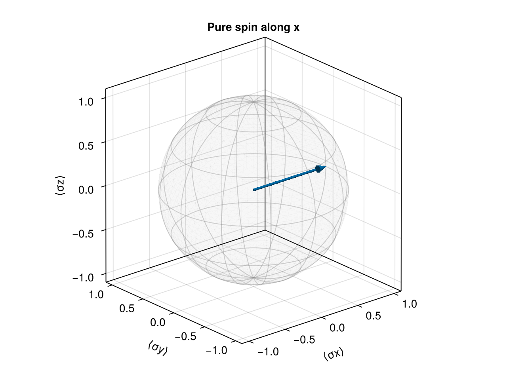
Mixed state
All arrows below point along +z. Their lengths are 1, 0.4, and 0.04, but their shaft and tip radii are the same. Axis decorations are hidden with ordinary Makie commands to make this comparison easier to see.
b = SpinBasis(1//2)fig = Figure(size=(960, 360))for (i, r) in enumerate((1.0, 0.4, 0.04)) rho = (1+r)/2 * dm(spinup(b)) + (1-r)/2 * dm(spindown(b)) ax = Axis3(fig[1, i]; title="Bloch length = $r", aspect=:data) blochsphereplot!(ax, rho) hidedecorations!(ax) hidespines!(ax)end┌ Warning: Assignment to `ax` in soft scope is ambiguous because a global variable by the same name exists: `ax` will be treated as a new local. Disambiguate by using `local ax` to suppress this warning or `global ax` to assign to the existing global variable.
└ @ visualization.md:99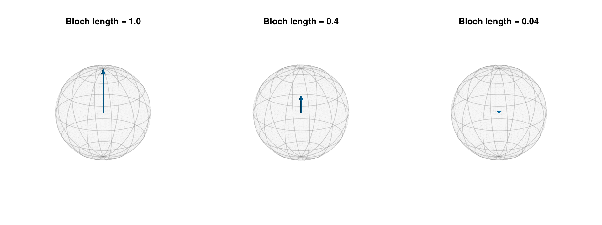
Dark theme and overlays
Recipe themes use the names BlochSpherePlot, FockDistributionPlot, WignerPlot, and WaveFunctionPlot, following Makie's theming conventions. The sphere attributes can be themed independently of the arrow. This example uses a coarser mesh and lighter colors, with cycle=[] to give all arrows the theme's fixed color. Set spherevisible=false when adding an arrow to an existing sphere.
fig = with_theme(theme_dark(); BlochSpherePlot=(spherecolor=(:gray65, 0.03), wireframecolor=(:gray80, 0.35), wireframewidth=1, sphereresolution=(8, 4), color=:white, cycle=[])) do b = SpinBasis(1//2) psi = (spinup(b) + im * spindown(b)) / sqrt(2) fig, ax, plot = blochsphereplot(psi; axis=(title="Pure spins along y and z", xlabel="⟨σx⟩", ylabel="⟨σy⟩", zlabel="⟨σz⟩"), figure=(size=(640, 480),)) blochsphereplot!(ax, spinup(b); spherevisible=false, color=:orange) figend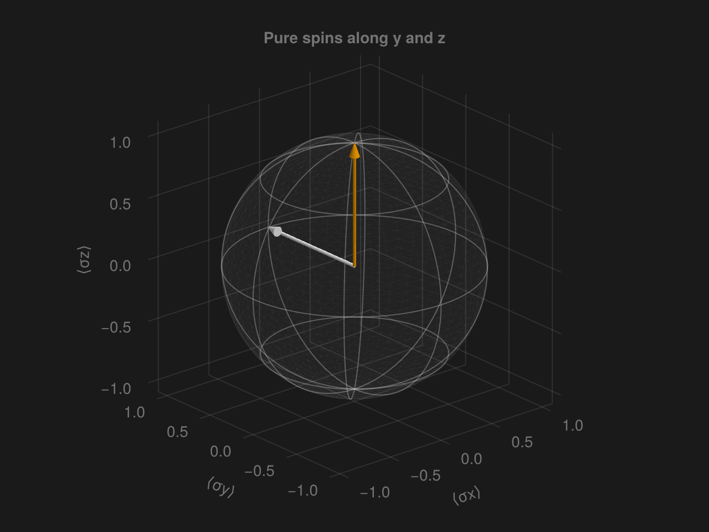
Fock distributions
The bars show the occupation probabilities $P(n)=|\langle n|\psi\rangle|^2$ for a ket or $P(n)=\rho_{nn}$ for a density operator. The horizontal coordinates are the occupation numbers, including any basis offset.
Coherent state
b = FockBasis(20)fig, ax, plot = fockdistributionplot(coherentstate(b, 2); axis=(title="Coherent state, α = 2", xlabel="Occupation n", ylabel="P(n)"), figure=(size=(640, 400),))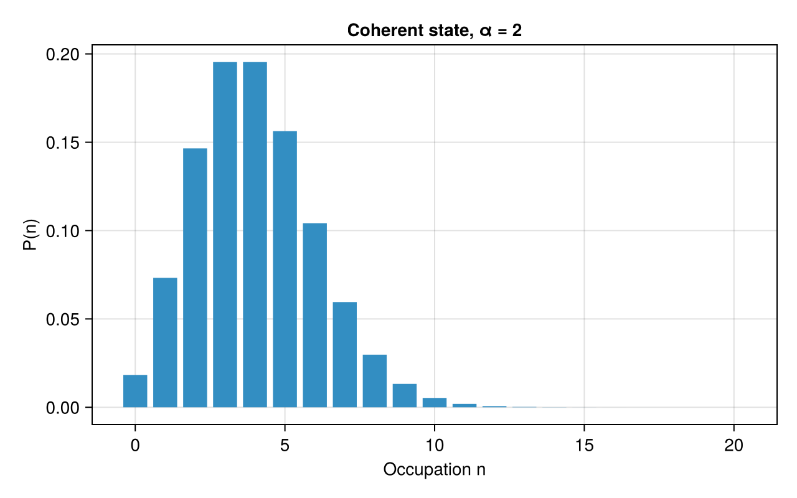
Basis with an offset
b = FockBasis(12, 4)fig, ax, plot = fockdistributionplot(fockstate(b, 7); axis=(title="Number state in a basis starting at n = 4", xlabel="Occupation n", ylabel="P(n)", xticks=4:12), figure=(size=(640, 400),))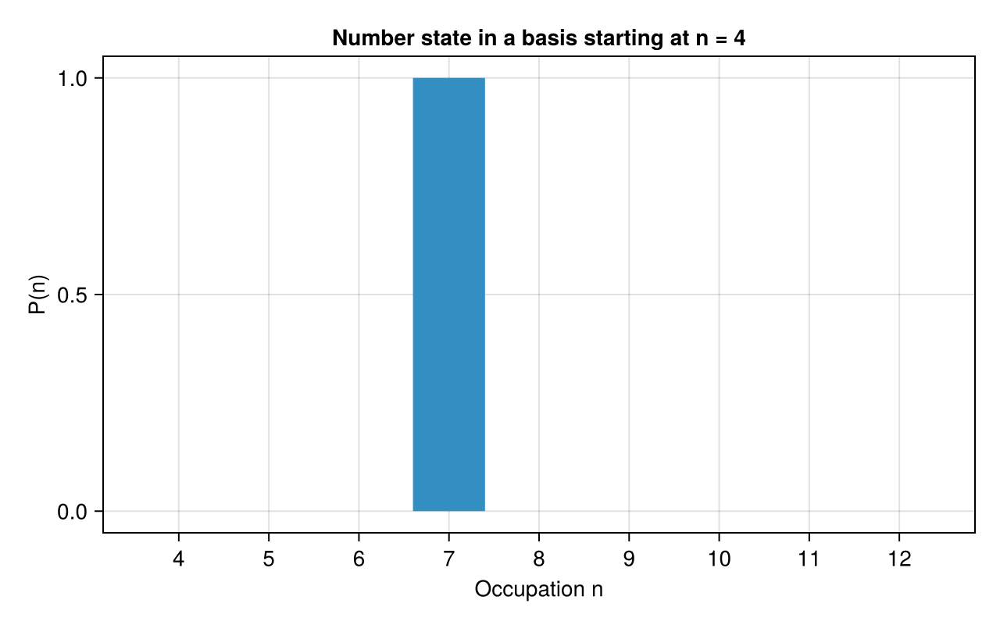
Comparing pure and mixed states
Makie's bar offsets and color cycling also work with the recipe. The legend uses the plots' label attributes.
b = FockBasis(30)psi = coherentstate(b, 2)rho = 0.5dm(coherentstate(b, 1)) + 0.5dm(coherentstate(b, 3))fig = Figure(size=(640, 400))ax = Axis(fig[1, 1]; title="Coherent state and a classical mixture", xlabel="Occupation n", ylabel="P(n)", limits=(-0.5, 20.5, nothing, nothing))fockdistributionplot!(ax, psi; dodge=1, n_dodge=2, label="α = 2")fockdistributionplot!(ax, rho; dodge=2, n_dodge=2, label="Mixture of α = 1 and α = 3")axislegend(ax)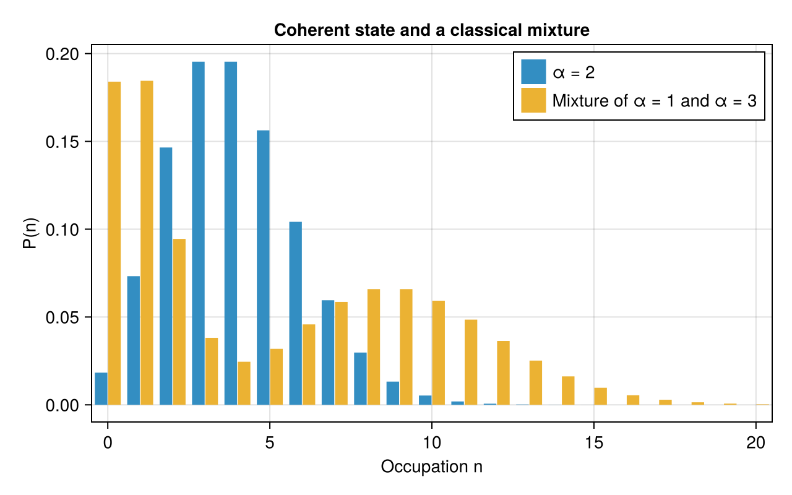
Wigner functions
Pass explicit position and momentum coordinates. The convention is $\alpha=(x+ip)/\sqrt{2}$; the vacuum has $W(0,0)=1/\pi$. The default colormap is :RdBu, with red for negative values and blue for positive values. Automatic limits are (-m, m), where m is the largest absolute value on the plotted grid. Zero therefore stays at the center of the color scale, including for states with an entirely positive Wigner function. All-zero data use (-1, 1). Add a Colorbar with the returned plot to show that range. The limits update when the state or grid changes; an explicit colorrange takes precedence.
Coherent state with defaults
b = FockBasis(30)x = range(-4, 5; length=151)p = range(-4, 4; length=151)fig, ax, plot = wignerplot(coherentstate(b, 1 + 0.5im), x, p; axis=(title="Coherent-state Wigner function", xlabel="Position x", ylabel="Momentum p", aspect=DataAspect()), figure=(size=(640, 480),))Colorbar(fig[1, 2], plot; label="W(x, p)")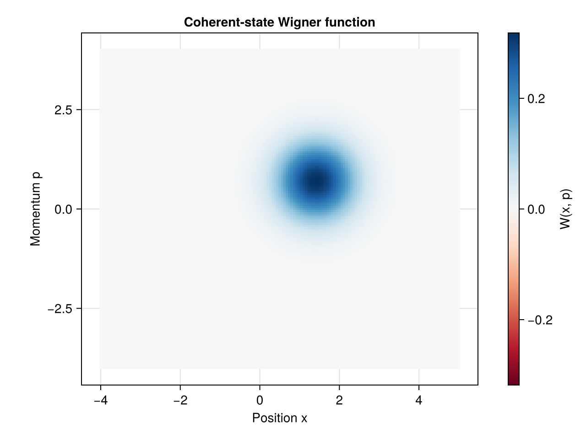
Negative values and a fixed color range
The default diverging colormap and symmetric limits make negative regions easy to identify. Use a fixed colorrange in a theme when comparing different states.
fig = with_theme(Theme(WignerPlot=(colorrange=(-1/pi, 1/pi),))) do b = FockBasis(10) x = p = range(-4, 4; length=151) fig, ax, plot = wignerplot(fockstate(b, 1), x, p; axis=(title="Single-photon Wigner function", xlabel="Position x", ylabel="Momentum p", aspect=DataAspect()), figure=(size=(640, 480),)) Colorbar(fig[1, 2], plot; label="W(x, p)") figend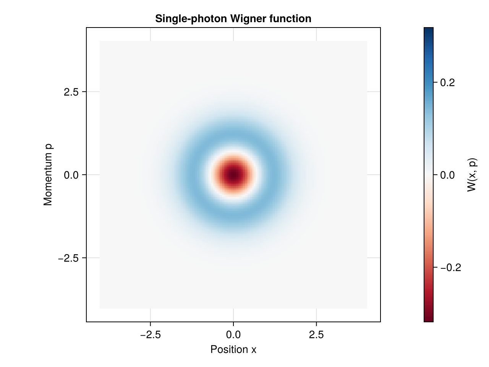
Cat-state density operator
b = FockBasis(30)psi = normalize(coherentstate(b, 2) + coherentstate(b, -2))x = range(-5, 5; length=201)p = range(-3, 3; length=151)fig = Figure(size=(640, 440))ax = Axis(fig[1, 1]; title="Even cat state", xlabel="Position x", ylabel="Momentum p", aspect=DataAspect())plot = wignerplot!(ax, dm(psi), x, p; colorrange=(-1/pi, 1/pi))Colorbar(fig[1, 2], plot; label="W(x, p)")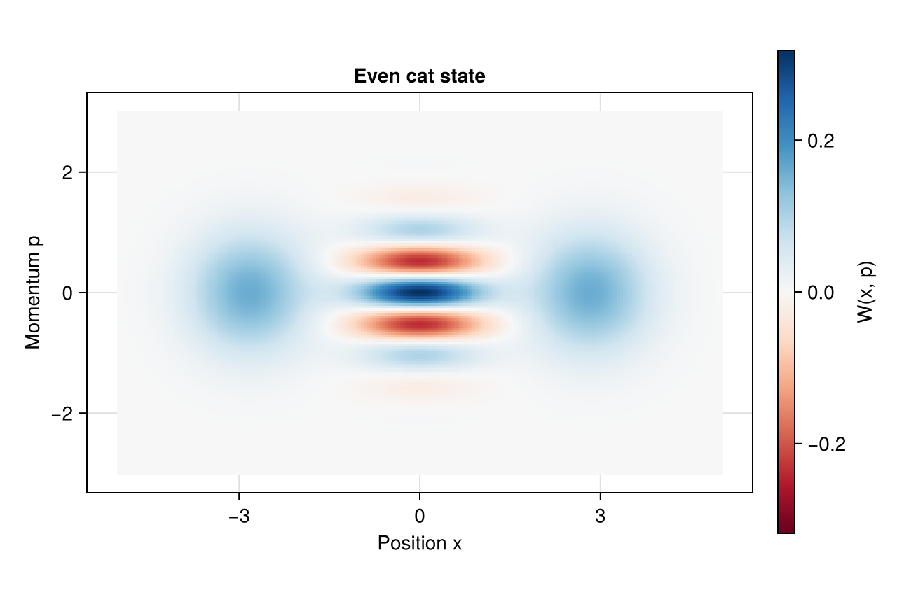
Wavefunctions
The recipe converts the discrete coefficients to a sampled wavefunction, $\psi(q_i)=\langle q_i|\psi\rangle/\sqrt{\Delta q}$, where $q$ is position or momentum. It then applies component to each sample. The default, abs2, shows probability density, so the area $\sum_i |\psi(q_i)|^2\Delta q$ is the ket's squared norm. Use real, imag, or abs to show other components, and label the vertical axis for the chosen quantity.
Position probability density
b = PositionBasis(-6, 6, 256)psi = gaussianstate(b, 1, 2, 1)fig, ax, plot = wavefunctionplot(psi; axis=(title="Gaussian position density", xlabel="Position x", ylabel="|ψ(x)|²"), figure=(size=(640, 400),))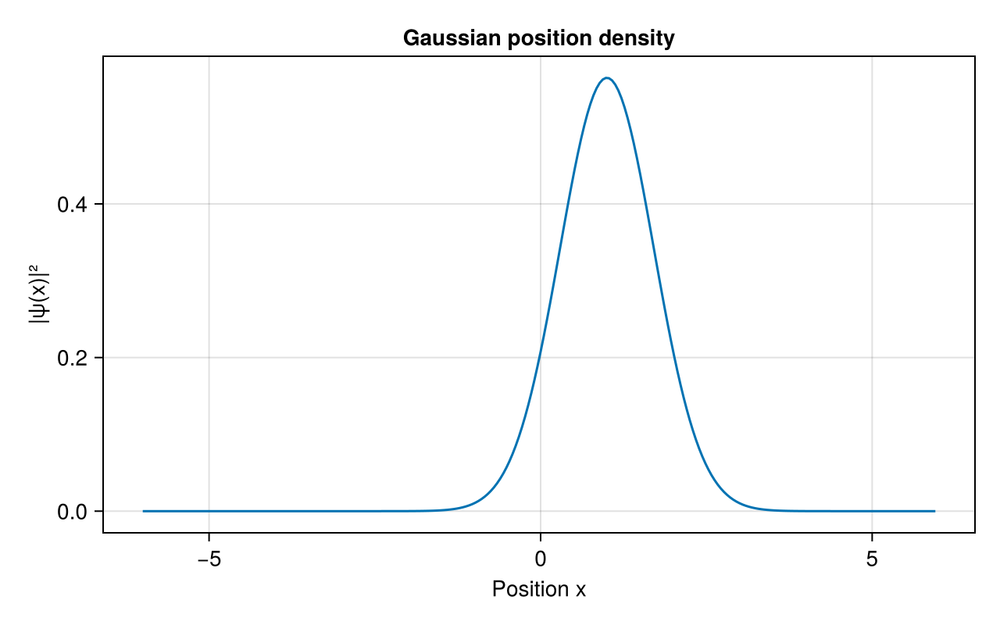
Real and imaginary parts
Both lines use Makie's normal color cycle. Amplitudes and probability densities have different units; display them on separate axes when comparing them.
b = PositionBasis(-6, 6, 256)psi = gaussianstate(b, 0, 3, 1.5)fig = Figure(size=(640, 400))ax = Axis(fig[1, 1]; title="Complex Gaussian wavefunction", xlabel="Position x", ylabel="Wavefunction amplitude")wavefunctionplot!(ax, psi; component=real, label="Re ψ(x)")wavefunctionplot!(ax, psi; component=imag, label="Im ψ(x)")axislegend(ax)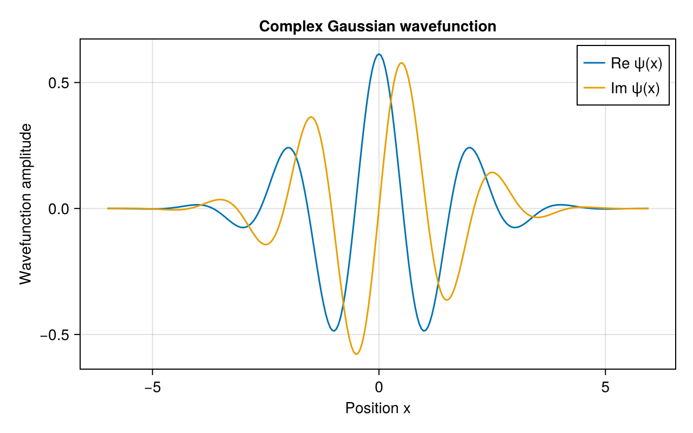
Momentum probability density
bx = PositionBasis(-32, 32, 512)bp = MomentumBasis(bx)psi = transform(bp, bx) * gaussianstate(bx, 0, 2, 1)fig, ax, plot = wavefunctionplot(psi; axis=(title="Gaussian momentum density", xlabel="Momentum p", ylabel="|ψ(p)|²", limits=(-3, 7, nothing, nothing)), figure=(size=(640, 400),))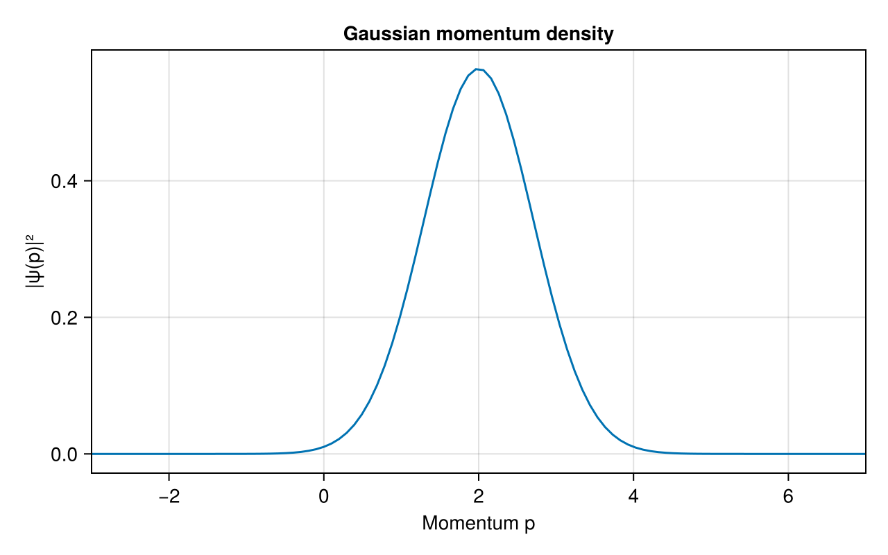